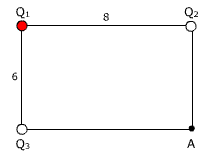
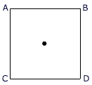

|
Una carga de -1 nC está
en el origen de coordenadas. Calcula el campo que crea en los puntos:
a) A (2, 3) m b)
B (-1, 2) m c) C (-1, -3) m
d) D (2, -2) m |
Una carga Q1 = 10-9
C está en el origen y otra carga Q2 = -3·10-9
C está en el punto (1, 0) m. Calcula el campo eléctrico
en los puntos: a) A (-1, 0) m b)
B (2, 0) m |
Un dipolo eléctrico está formado por
dos cargas puntuales de 2 μC y -2 μC, distantes entre sí 6 cm. Calcula
el campo eléctrico creado:
a) En un punto situado en la prolongación
del segmento que une las cargas y a 2 cm de +Q
b) En un punto distante 5 cm de cada carga |
En tres de los vértices de un
cuadrado de lado L hay sendas cargas: Q, -Q, Q. Calcula el campo eléctrico
creado en:
a) El vértice vacío
b) El centro del cuadrado |
|
En el vértice correspondiente
al ángulo recto de un triángulo rectángulo isósceles, de hipotenusa
3 m, se coloca una carga de
1 μC y en los otros vértices se colocan sendas cargas de -2 μC.
Calcula el campo en el punto medio de
la hipotenusa
|
|
En los vértices de un hexágono
de lado L hay sendas cargas: +Q, +Q, +Q, -Q, -Q, -Q. Determina el campo
eléctrico en su centro |
En el origen hay una carga Q1=16
nC, en el punto (6, 0) m hay otra carga Q2=12 nC y en el punto
(3, 0) m hay una carga desconocida Q. Determina el valor de esta carga
sabiendo que en el punto
(8, 0) m el campo vale: 20.25 i N/C |
Para las siguientes distribuciones, determina
donde se anula el campo:
a) Q1 = -8 nC,
Q2 = -2 nC, d = 3 m b) Q1
= 1 nC, Q2 = -9 nC, d = 1 m
c) Q1 = 12 nC, Q2
= -3 nC, d = 4 m d) Q1 = -3 nC, Q2
= 3 nC, d = 2 m |
Se sitúan tres cargas eléctricas Q1,
Q2 y Q3 en los puntos A (0, 0, 0), B(0, 4, 0), C(0,
4, 3), respecti-vamente Siendo Q1 = 0.1 C calcula Q2
y Q3 para que sea nulo el campo eléctrico en el punto P(0,
0, 3). Las coordenadas vienen dadas en m |
 |
Siendo Q1 = -2
nC determina los valores de Q2 y Q3 sabiendo
que el campo eléctrico se anula en el vértice vacío
del rectángulo.
Las distancias están dadas en m |
|
Una esfera metálica de radio 30
cm posee una carga de 12 nC. Calcula el campo eléctrico:
a) En el interior b)
En la superficie c) A 20 cm de la superficie |
Calcula el campo a 10 cm de una placa metálica
cuya densidad de carga es de: -8·10-4 nC/cm2 |
Dos placas metálicas de 100 cm2
separadas 10 mm poseen cargas de 2 pC y -2 pC respectivamente. Calcula
el campo eléctrico entre dichas placas |
En dos vértices de un triángulo
equilátero de lado L hay sendas cargas Q y -2Q. Calcula el campo
eléctrico en el vértice vacío |
 |
Se colocan cuatro cargas
puntuales en los vértices de un cuadrado de lado
a = 1 m. Calcula el módulo, dirección y sentido del
campo eléctrico en el centro del cuadrado O en los siguientes
casos:
a) Las cuatro cargas son iguales y valen
3 μC
b) Las cargas en A y B valen 2 μC
y las situadas en C y D valen -2 μC
c) Las cargas en A, B y C valen
1 μC y la situada en D vale -1 μC |
|
Dos cargas eléctricas están separadas 4
m siendo una de ellas Q1 =- 16 nC. Determina la magnitud y
signo de la carga desconocida Q sabiendo que en el punto medio entre las
dos el campo vale 54 N/C y está dirigido hacia la carga conocida |
Se sitúan tres cargas eléctricas Q1,
Q2 y Q3 en los puntos A (0, 0, 0), B(0, 4, 0), C(0,
4, 3), respectiva-mente donde las coordenadas vienen dadas en m. Se pide:
a)
Si Q1 = 0.1 C calcular Q2 y Q3 para que
sea nulo el campo eléctrico en el punto P(0, 0, 3)
b)
Si Q1 = 0.1 C, Q2 = -0.4 C, Q3 = 0.2
C, calcular el trabajo necesario para llevar una carga unitaria desde
el infinito hasta el punto P(0, 0, 3) |
Dadas dos cargas puntuales q1 = 2 C y q2
= -3 C, separadas 40 cm. Calcular el campo eléctrico en el punto
medio del segmento que las une |
Se tiene un campo eléctrico uniforme
que se extiende por todo el espacio. Seguidamente se introduce una carga
Q = 4 μC, que se situa en el punto (2, 0) m
a) Calcula el vector campo eléctrico
resultante en el punto P (2, 3) m y su módulo
b) A continuación se añade
una segunda carga Q' en el punto (0, 3) m ¿Qué valor ha
de tener Q' para que el campo resultante en el punto P no tenga componente
x?
|